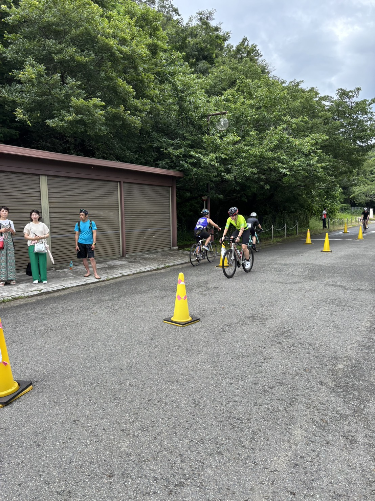
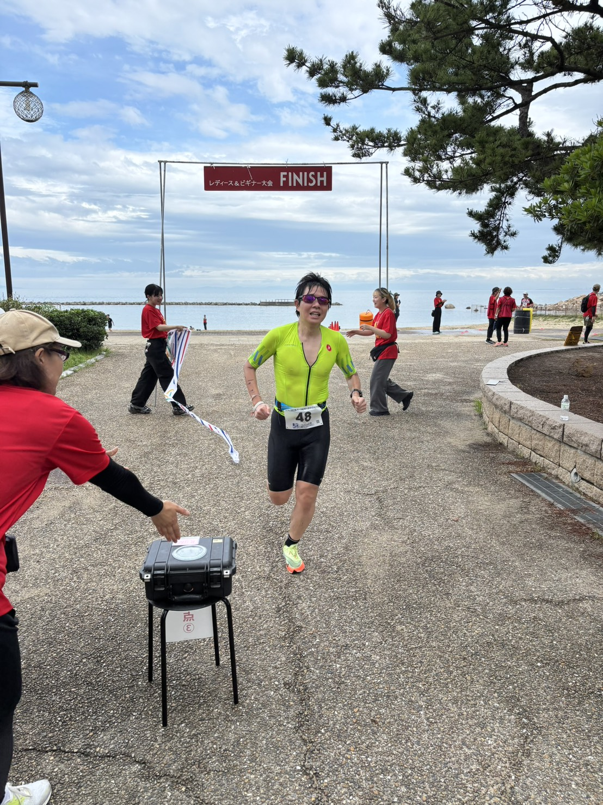
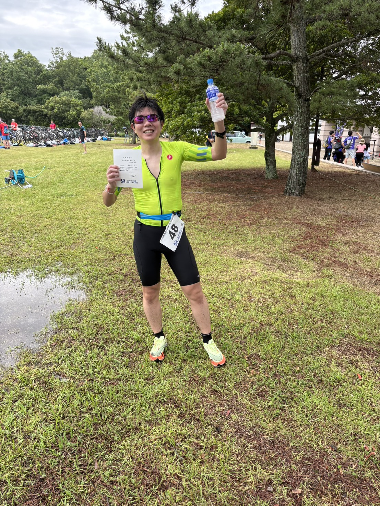

大会概要
レース結果
| セクション | 区間タイム | 区間順位 |
|---|---|---|
| 🏊 スイム 0.75km | 17:35.8 | 37位 |
| 🚴 バイク区間 | 43:11.1 | 4位 |
| 🏃 ラン区間 | 22:18.6 | 4位 |
🏊 スイム
750mを17分35秒8で泳ぎ、 区間順位は37位でした。 100m平均は約2分21秒です。
人生初のトライアスロンだったため、 スイムで後方からスタートする展開になりました。 このレースを通じて、 総合順位を上げるにはスイム強化が必要だと 明確に分かりました。
良かった点
初めての実戦スイムを終え、 バイクとランへ進むことができました。
改善点
直進性、呼吸の安定、 集団内での位置取り、 巡航ペースの向上が必要です。
🚴 バイク

バイク区間は43分11秒1で、 区間順位は4位でした。 スイム37位から大きく順位を戻すことができました。
初めてのトライアスロンでも、 バイクで上位の区間順位を出せたことは、 今後へ向けた大きな自信になりました。
良かった点
区間4位の走りで、 スイムの遅れを大きく挽回できました。
改善点
より長いODの40kmでも速度を維持できるよう、 持久力と巡航効率を高める必要があります。
🏃 ラン
ラン区間は22分18秒6で、 区間順位は4位でした。 バイクに続いて上位のタイムを記録しました。
学生時代から取り組んできた陸上競技の走力を生かし、 初めてのトライアスロンでも ランで順位を上げることができました。
良かった点
バイク後でも大きく崩れず、 得意なランで区間4位に入りました。
改善点
トランジション後の序盤から、 より早くランのリズムへ移ることが課題です。
順位の変化
フィニッシュ

完走後

本人のレースメモ
女性またはビギナー限定ということもあり、 上位でフィニッシュすることができました。
初完走の喜びと同時に、 スイムを改善すればさらに上を目指せるという 手応えを得た大会でした。